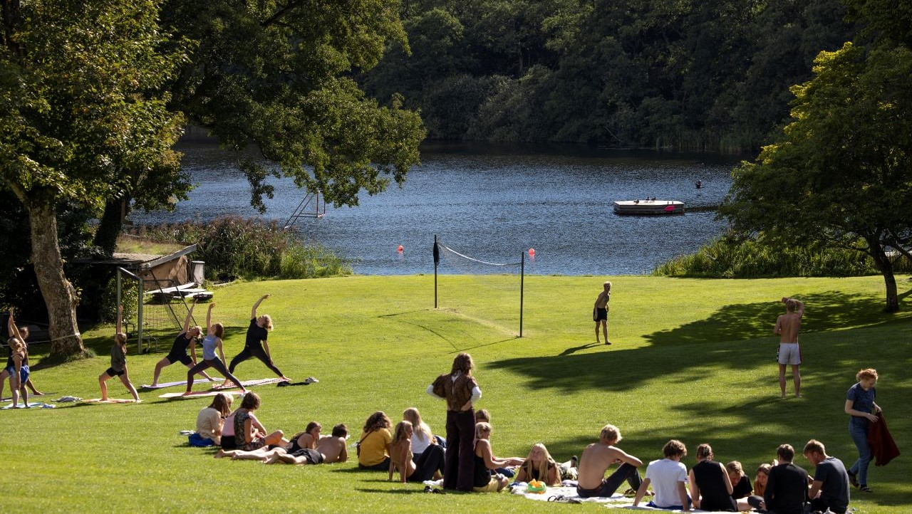

Eigill Bavnehøj
Eigill har været forstander på Højskolen Atterdag i 15 år og har en dyb forståelse for skolens værdier og traditioner. Han er kendt for sin evne til at skabe et inspirerende læringsmiljø og for at motivere både elever og lærere.

Eigill har været forstander på Højskolen Atterdag i 15 år og har en dyb forståelse for skolens værdier og traditioner. Han er kendt for sin evne til at skabe et inspirerende læringsmiljø og for at motivere både elever og lærere.

Isolde har undervist på Højskolen Atterdag i 5 år og er kendt for sin passion for billedkunst. Hun har en unik evne til at inspirere eleverne til at udforske deres kreative sider og skabe fantastiske kunstværker.

Morgana har været ansat på Højskolen Atterdag i 10 år og har undervist i hjemmekunstskab. Hun er kendt for sin kreative tilgang til undervisning og har inspireret mange elever til at udforske deres kunstneriske evner.
Kanoen er et vigtigt element i højskolens friluftsaktiviteter. Eleverne lærer at navigere i kanoen og nyde naturen på en unik måde.
Rockguitaren er en populær instrument i højskolens musikundervisning. Eleverne lærer at spille grundlæggende akkorder og sange på en sjov og engagerende måde.
Plantefarvning er en kreativ aktivitet, hvor eleverne lærer at udvinde farver fra forskellige planter og bruge dem til at farve tekstiler og kunstværker.
Tennis er en populær sport på højskolen, hvor eleverne lærer grundlæggende teknikker og regler. Det er en sjov måde at holde sig aktiv og socialisere med andre elever.